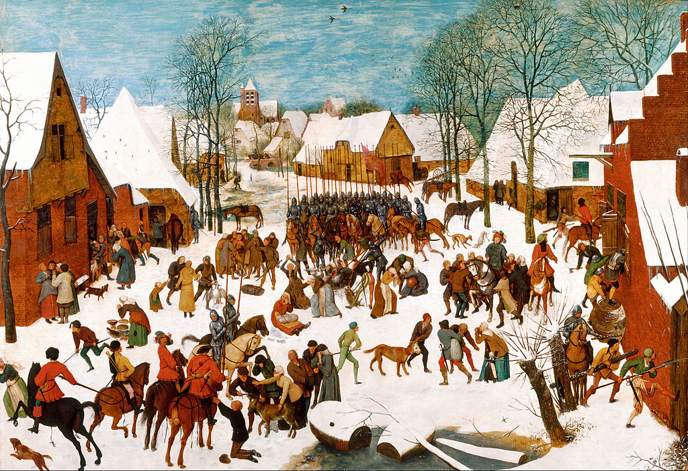

<head>
<meta charset="UTF-8" />
<meta name="keywords" content="drawing, painting" />
<meta name="description" content="drawings by Sunjy" />
<title>Sunjy</title>
<link rel="shortcut icon" type="image/x-icon" href="../../mImages/mCommon/favicon.ico" media="screen" />
<link rel="stylesheet" type="text/css" href="../../mCsses/mCommon/mCssA.css" />
<link rel="stylesheet" type="text/css" href="../../mCsses/mCommon/mCssB.css" />
<link rel="stylesheet" type="text/css" href="../../mCsses/mCommon/mCssC.css" />
<link rel="stylesheet" type="text/css" href="../../mCsses/mCommon/mCssD.css" />
<link rel="stylesheet" type="text/css" href="../../mCsses/mContent/mCssA.css" />
<link rel="stylesheet" type="text/css" href="../../mCsses/mContent/mCssB.css" />
<link rel="stylesheet" type="text/css" href="../../mCsses/mContent/mCssC.css" />
<link rel="stylesheet" type="text/css" href="../../mCsses/mContent/mCssD.css" />
</head>
<script type="text/javascript" src="../../mScripts/mContent/mContentAA.js" /></script>
<script type="text/javascript" src="../../mScripts/mContent/mContentAB.js" /></script>
<script type="text/javascript" src="../../mScripts/mContent/mContentAC.js" /></script>
<script type="text/javascript" src="../../mScripts/mContent/mContentAD.js" /></script>
<script type="text/javascript"></script> 
<script type="text/javascript">
document.write('<div class="mImgAbsolute"></div>');
/*
document.write('<p class="mFontSizeBColor" />From a white paper...</p>');
document.write('<table class="center"><tr><td>');
document.write('');
document.write('</td></tr></table>');
*/
</script>


<script type="text/javascript">
document.write('<p class="mFontSizeBColor" />Massacre of the Innocents</p>');
document.write('<p class="mFontSizeSColor" />“Massacre of the Innocents” by Pieter Bruegel, the Elder, depicts the story from St Matthew’s Gospel when King Herod ordered the death of all children in Bethlehem under the age of two. <br><br>Herod made this command after hearing from the wise men of the birth of Jesus. Bruegel re-imagined the scene into a 16th-century Netherlandish village, where Spanish soldiers and German mercenaries attack the Flemish villagers.<br><br>This depiction served as a commentary on the occupying Spanish led troops in the prelude to the Dutch Revolt against Spanish rule, also known as the Eighty Years’ War.<br><br>Bruegel’s detailed painting is typical of his elaborate narrative style, and the painting depicts numerous small story vignettes in the overall scene.<br><br>Bruegel’s art was a favorite image, and several oil-on-oak-panel versions of “The Massacre of the Innocent”s were painted by 16th-century Netherlandish painters Pieter Bruegel the Elder and his son Pieter Brueghel the Younger.<br><br>This is the only version by Bruegel, the Elder, many other variants are attributed to his son, Pieter Breughel the Younger, with different art historians listing as many as possibly 14 versions.<br></p>');
document.write('<table class="center" /><tr><td>');
document.write('<br>Herod made this command after hearing from the wise men of the birth of Jesus. Bruegel re-imagined the scene into a 16th-century Netherlandish village, where Spanish soldiers and German mercenaries attack the Flemish villagers.<br><br>This depiction served as a commentary on the occupying Spanish led troops in the prelude to the Dutch Revolt against Spanish rule, also known as the Eighty Years’ War.<br><br>Bruegel’s detailed painting is typical of his elaborate narrative style, and the painting depicts numerous small story vignettes in the overall scene.<br><br>Bruegel’s art was a favorite image, and several oil-on-oak-panel versions of “The Massacre of the Innocent”s were painted by 16th-century Netherlandish painters Pieter Bruegel the Elder and his son Pieter Brueghel the Younger.<br><br>This is the only version by Bruegel, the Elder, many other variants are attributed to his son, Pieter Breughel the Younger, with different art historians listing as many as possibly 14 versions.<br>" />');
document.write('</td></tr></table>');
</script>


